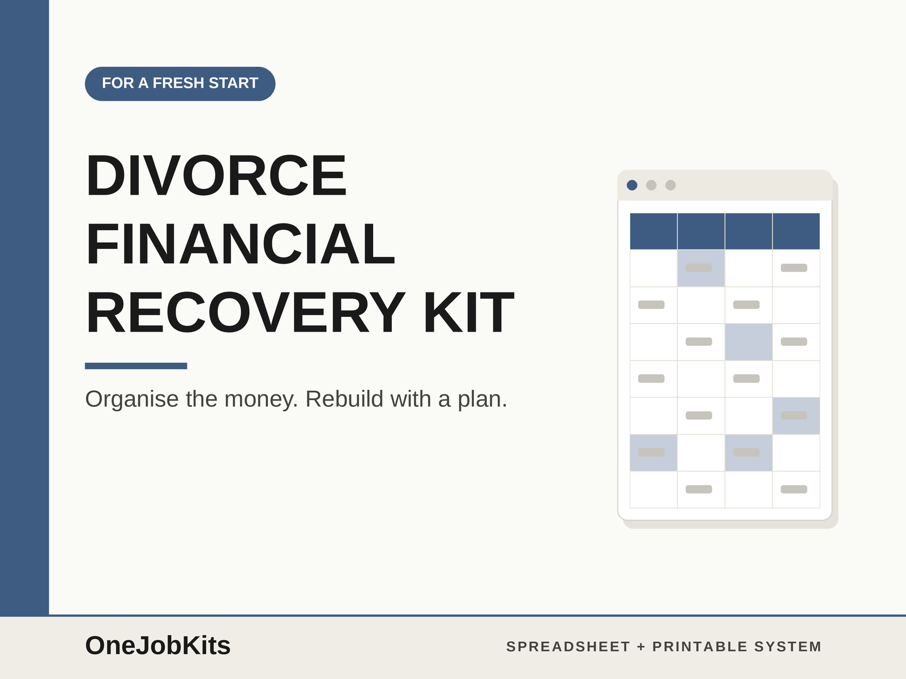

OneJobKits · Kit #5
Divorce Financial Recovery Kit — divorce financial checklist

If you searched for a divorce financial checklist, your money is probably scrambling right now: joint accounts, shared debts, two households where there was one, and a pile of financial decisions that all feel urgent at once — usually before you have seen a single complete number.
This page gives you the first piece free, right here: the Day-1 starter checklist. Below it is the full kit it comes from — a 14-tab planner that holds your documents, assets, debts, budgets and settlement offers in one calm, organised place, plus a 58-page printable workbook that runs from Day 1 through Month 12. It does not tell you what to decide. It makes sure you decide with the whole picture in front of you — and it is an organiser only, not legal or financial advice.
Free download — start with the Divorce Money Starter Checklist
The Divorce Money Starter Checklist is a 5-page PDF: the Day-1 account security checklist — the accounts, mail and passwords to secure first — plus the document-gathering list, in the order attorneys and mediators ask for them. It is the first two pages of the system, sized for the worst week.
Download the free Divorce Money Starter Checklist (PDF)Get it on Gumroad instead
What the starter does not do: it secures and gathers; it does not compare, budget or rebuild. The full kit below adds the money picture itself — what you own and owe, what two households cost, what each settlement offer is actually worth on paper, and the first-year budget that follows from it.
What's inside the full kit
- The money planner (spreadsheet, 14 tabs) — opens natively in Google Sheets and Excel
- DOCUMENT CHECKLIST — the 15 items attorneys and mediators ask for, as a gather-in-order list
- ASSETS & DEBTS — everything owned and owed, with mine / theirs / joint totals kept separate and honest
- BUDGET — NOW vs AFTER — the current household budget and the after budget, side by side, with live differences: the two-households problem in numbers
- ACCOUNT SEPARATION tracker — what is joint, what is closed, what is still open, account by account
- COSTS & LEGAL FEES log — what the process itself is costing, with live totals
- SETTLEMENT COMPARISON — up to 3 offers side by side; support totals and each offer's net position calculate for you
- RECOVERY BUDGET M1–12 — the first year rebuilt month by month, with what is left over each month calculated
- CREDIT REBUILD TRACKER — your credit picture and the steps back, logged
- CHILDREN COSTS · PROPERTY & MORTGAGE (equity calculated) · RETIREMENT & PENSIONS — the three piles most often argued from memory instead of paper
- TIMELINE & TASKS · NOTES & CONTACTS — the stages, the deadlines and the people, in the same file
- Printable workbook (PDF, 58 pages) — Day-1 security checklist, the paperwork section, money-picture worksheets, two-household budgets, settlement pages, the month 1–12 rebuild section, 12 monthly budget-review worksheets and 12 meeting-notes pages
- Bundle ($49) adds: the State Checklist Pack — plain-language state checklists for filing, residency and waiting periods, each dated and sourced to official state court pages — plus the settlement comparison upgrade
A filled example — so you can see the finished thing
The tab buyers open most is the Settlement Comparison, so here is a sample one, filled in. The person is fictional — call her R. — and every figure is invented; what is real is the shape of the comparison:
| Settlement Comparison (sample) | Offer A | Offer B | Offer C |
|---|---|---|---|
| Assets you keep | House (equity $120,000) | Half the house equity ($60,000) + half the retirement ($43,000) | Retirement ($86,000) + savings ($22,000) |
| Debts you take | $14,500 (all joint debts) | $7,250 (half) | $0 |
| Support, total over its term | $18,000 | $12,000 | $24,000 |
| Net position, as the tab calculates it | $123,500 | $107,750 | $132,000 |
The sheet does not pick a winner — the house, the retirement and the support are different kinds of money, and only R. and her attorney can weigh them. What the sheet ends is the confusion: three offers, one set of rows, no arithmetic done from memory in a mediator's waiting room.
Who it is for
Anyone in the first 12 months of separation or divorce — or preparing for it — who wants their finances organised before and after the legal process: documents gathered once, offers compared on paper, and a first-year budget that exists before the first month does.
Who it is not for
Anyone who needs legal strategy, a custody argument or financial advice. This kit prepares you to brief the professionals; it does not replace them, and in a contested case it is the filing cabinet, never the advocate.
Questions buyers ask
- Is this legal or financial advice?
- No. It is a financial organiser. It does not tell you what to decide, what to ask for, or what an offer is worth to you — it gives you one calm place to see your whole financial picture, so you walk into attorney, mediator or bank meetings prepared instead of guessing. Your attorney makes the legal calls; divorce law differs in every state and changes.
- What documents will my attorney or mediator ask for?
- The kit's Document Checklist tab lists the 15 items attorneys and mediators ask for, as a gather-in-order checklist — account statements, debts, property, retirement, income and the rest — so you collect them once, before the first meeting bills you for the reminder.
- How do I compare two settlement offers fairly?
- Put them in the same rows. The Settlement Comparison tab lines up to 3 offers side by side — the assets you keep, the debts you take, the support totals — and calculates each offer's net position. It will not tell you which offer to take; it makes the three numbers impossible to confuse with feelings.
- I have not separated yet — is it too early? Or too late?
- Neither. The free starter on this page begins with a Day-1 account security checklist and the document-gathering list, which are useful before anything is filed. The full kit runs through the first 12 months after separation, so it is built to be started wherever you are and carried forward.
- Google Sheets or Excel?
- Both. The planner file opens natively in Google Sheets and in Microsoft Excel — same 14 tabs, same formulas. The 58-page workbook is a printable PDF with fillable worksheets.
- What does the Bundle add?
- Two things: the State Checklist Pack — plain-language state checklists covering what to verify in your state for filing, residency and waiting periods, each one dated and sourced to official state court pages — and the settlement comparison upgrade for the planner.
- What does the free checklist cover, and what does the full kit add?
- The free starter is 5 pages: the Day-1 account security checklist plus the document-gathering list. The full kit adds the whole money picture around it — assets & debts, the now-vs-after budgets, account separation, costs and legal fees, the settlement comparison, the month-by-month first-year recovery budget, the credit rebuild tracker — and the 58-page printable workbook.
Prices
Standard: $29 · Bundle: $49 — one-time payment, digital download. No subscription; the files are yours.
Can't find the kit you need?
We build it. Ask us — first asker gets it at half the shelf price. Tell us the job at onejobkits.com and we will build the kit for it.
Related kits
Please know: this is a financial organiser only — not legal or financial advice, and no substitute for your attorney or mediator. Divorce law differs by state and changes. All example data is fictional (R., the offers and every figure are invented, and the sample says so).